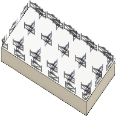

<div id="supportPropertyFragment_macro_structure_fragment"><p>プリセットから選択するか、断片のサイズのカスタム値を定義します。</p>
<table class="tipTable" cellspacing="10">
<tr>
<td><center></center></td>
<td><center></center></td>
</tr><tr>
<td><center><p><b>小さい断片</b></p></center></td>
<td><center><p><b>大きい断片</b></p></center></td>
</tr></table>
</div>